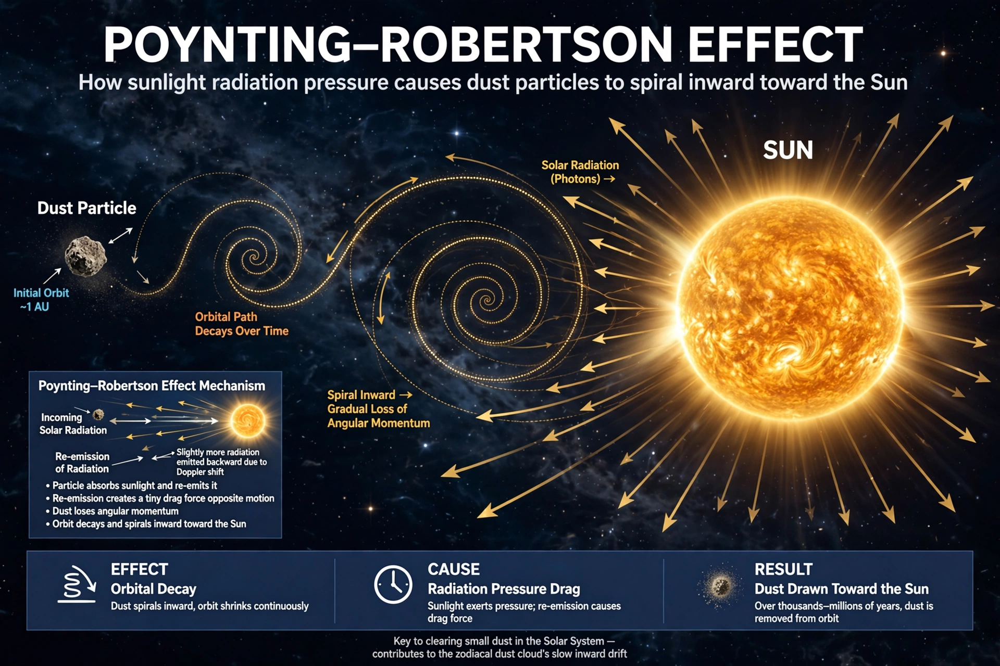

The Poynting–Robertson effect, also known as Poynting–Robertson drag, named after John Henry Poynting and Howard P. Robertson, is a process by which solar radiation causes a dust grain orbiting the Sun to lose angular momentum and spiral inward.
In the grain's rest frame, sunlight is aberrated — arriving slightly from ahead — so re-radiation exerts a drag opposing orbital motion. In the Sun's frame, the grain absorbs radial photons and re-emits isotropically in its own frame, netting a tangential drag force proportional to velocity/c.
It clears interplanetary dust over millions of years, shapes zodiacal light, affects circumstellar disks, and competes with radiation pressure, which blows out the smallest grains. Related is the Yarkovsky effect for larger bodies.
See also: Radiation pressure, Zodiacal light